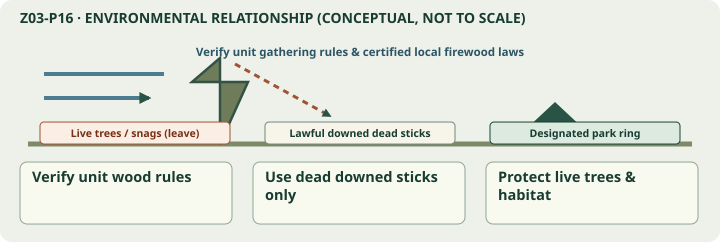

Z03-P16 · Fire and ignition · New manuscript
Gather dead and downed wood lawfully without damaging live trees
Source modest wood fuel responsibly where permitted while respecting park bans and forest-pest rules.
When it applies · Public lands where local regulations explicitly allow gathering dead and downed wood for campfires.
Equipment · Current park/forest rules, gloves if available and lawful established fire ring.

Actions
- Check whether wood gathering is permitted in the specific park or wilderness unit; many state parks prohibit collecting any wood and require approved or certified firewood.[C20, C17, C01]
- Where deadfall gathering is lawful, collect only dead and downed sticks already on the ground—never break branches off live or standing dead trees that provide wildlife habitat and fall hazards.[C17, E22, E13]
- Gather small-diameter downed pieces that burn cleanly to fine ash without sawing large logs or stripping the surrounding campsite bare.[C17, C04]
Failure recognition · Hacking green branches off live conifers or transporting uncertified out-of-area firewood carrying invasive forest pests into state parks.[C17, C20, E22]
Verify · Confirm unit legality for deadfall or certified firewood, zero live-tree damage and modest fuel volume matched to a small fire.[C20, C17, ED]
Stop or change course · If local rules prohibit wood gathering or open fires, leave all wood untouched and use an approved portable stove or no-fire plan.[C01, C13, C20]
Evidence and editorial notes
- C01 · Minnesota DNR · Fire Danger and Burning Restrictions (current web edition; verify at use)
- Section: Fire danger and burning restrictions map and links · Conditions: Current Minnesota location, date and jurisdiction
Support: Check current restrictions and local authority requirements before lighting.
Limitations: Restrictions can change daily with humidity, wind, and drought; verify immediately before use. · Conflicting evidence: None; local jurisdiction always supersedes general notes.
Editorial note: Mandatory legal check before any live fire card. · Specialist reviewer: Fire prevention and local land management
Primary source · checked 2026-11-24 - C04 · USDA Forest Service / Smokey Bear · Smokey Bear’s Campfire Safety Guide (agency PDF)
- Section: Maintain and extinguish a campfire · Conditions: Occupied campfire, water and tools available
Support: Stay with the fire. Drown, stir and add water again until cool. Leaving visible embers or merely covering them is unsafe.
Limitations: Deep duff or peat soils can hold smoldering embers underground even after surface ash cools. · Conflicting evidence: None; prohibits dirt-only burial as primary extinguishment.
Editorial note: Enforces drown-stir-feel-cold cycle before site departure. · Specialist reviewer: Fire prevention and land management
Primary source · checked 2026-11-24 - C13 · USDA Forest Service · Know Before You Go: Fire (current web edition)
- Section: Know Before You Go > Campfire Safety and Restrictions · Conditions: National Forest and public lands with seasonal fire restrictions
Support: Fire restriction stages progressively limit open campfires and may permit only liquid/gas stoves with an on/off shutoff valve in cleared areas; check current local orders before departure.
Limitations: Exact Stage 1/2/3 definitions vary by forest unit and state agency. · Conflicting evidence: None; aligns with MN-FIRE.
Editorial note: Supports fire-restriction tier decision trees and stove vs campfire distinctions. · Specialist reviewer: Fire prevention and land management
Primary source · checked 2026-11-24 - C17 · NPS · Leave No Trace Seven Principles (current web edition)
- Section: Principle 5 > Minimize Campfire Impacts · Conditions: Permitted backcountry sites where wood fires are allowed
Support: Where fires are permitted, keep fires small, use only dead and downed wood gathered lawfully, burn wood completely to ash, and use a camp stove where wood is scarce or impacts are high.
Limitations: Some parks prohibit all wood gathering or open fires regardless of deadfall availability. · Conflicting evidence: None; balances lawful fuel collection with habitat protection.
Editorial note: Guides lawful fuel gathering and small-fire thermal management. · Specialist reviewer: Land management and fire prevention
Primary source · checked 2026-11-24 - C20 · Minnesota DNR · State Park Rules (current web edition)
- Section: Minnesota State Park Rules > Firewood and Fires · Conditions: Minnesota state parks and public campgrounds
Support: Build fires only in designated rings where permitted and use only approved local or certified firewood to prevent invasive forest-pest spread.
Limitations: Rules differ between state parks, state forests, and federal wilderness areas; verify unit rules. · Conflicting evidence: None; regionalized legal compliance for Minnesota.
Editorial note: Documents lawful wood sourcing and designated-ring constraints. · Specialist reviewer: Land management and forestry
Primary source · checked 2026-11-24 - E13 · USDA Forest Service · Hazard Tree Safety (agency PDF)
- Section: What You Can Do to Reduce Risk · Conditions: Forest campsites and stops
Support: Look for dead trees and falling material. Stay away from hazardous trees and move away when winds make the site unsafe.
Limitations: Internal decay and root rot can cause live-looking trees to fail in saturated soils or high wind. · Conflicting evidence: Does not specify a universal exclusion radius; tree height and slope govern fall reach.
Editorial note: Prevents false precision on fall-zone distance while requiring overhead screening. · Specialist reviewer: Land management and arboriculture safety
Primary source · checked 2026-11-24 - E22 · NPS · Leave No Trace Seven Principles (current web edition)
- Section: Principle 2 > Travel and Camp on Durable Surfaces · Conditions: Campsite selection and shelter setup on public lands
Support: Pitch shelters on established pads, rock, gravel, dry grass, or snow rather than fragile meadows or saturated shorelines; do not alter terrain or cut live vegetation for shelter frames.
Limitations: Deadfall shelter construction is inappropriate in high-use or protected zones except genuine life-safety emergencies. · Conflicting evidence: Restricts destructive improvised shelter building during routine trips.
Editorial note: Separates lawful low-impact practice from emergency improvised cover. · Specialist reviewer: Land management and wilderness ethics
Primary source · checked 2026-11-24
Source lineage · NPS Leave No Trace and Minnesota DNR park rules; new manuscript · Classification · New manuscript.